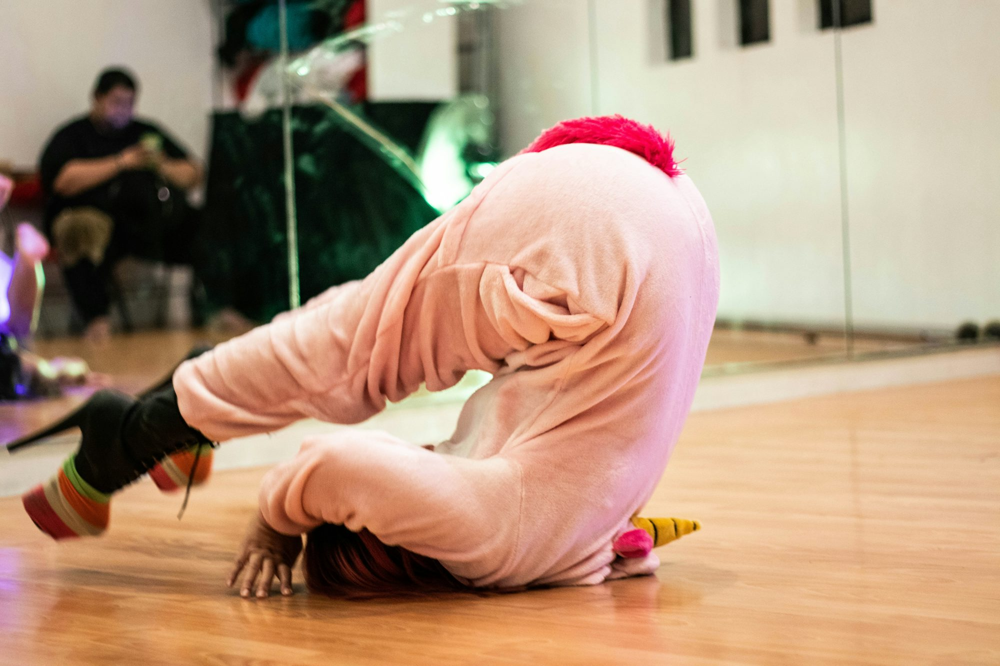
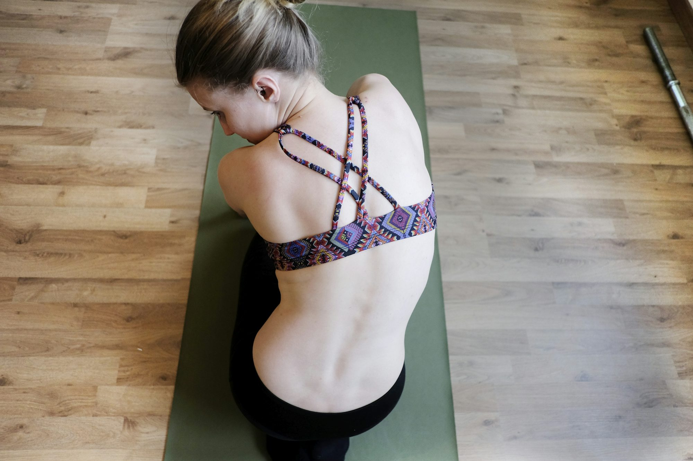
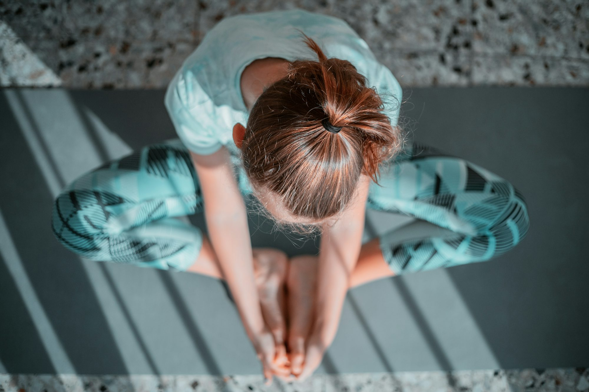

Finding Balance: The Importance of a Well-Rounded Fitness Approach
This article discusses the significance of incorporating various fitness activities into your routine for improved overall health and enjoyment.Interactive exhibit


Content collection
Fitness Beyond the Gym: Embracing an Active Lifestyle
This article explores how various forms of exercise, from traditional workouts to everyday activities, contribute to a healthier and more fulfilling lifestyle, emphasizing the importance of staying active.

2025-11-24
Sophia Lee
Mindful Eating: Cultivating a Healthier Relationship with Food
2025-06-30
Emma Johnson
Fitness Beyond the Gym: Exploring Outdoor and Functional Workouts
This article examines the benefits of outdoor and functional workouts, providing insights into how these activities can enhance overall fitness and well-being while encouraging a deeper connection with nature.
2025-11-03
Emma Thompson
The Art of Journaling: A Path to Self-Discovery and Growth
This article explores the practice of journaling, its benefits for mental well-being, and practical tips for starting and maintaining a journaling habit.
